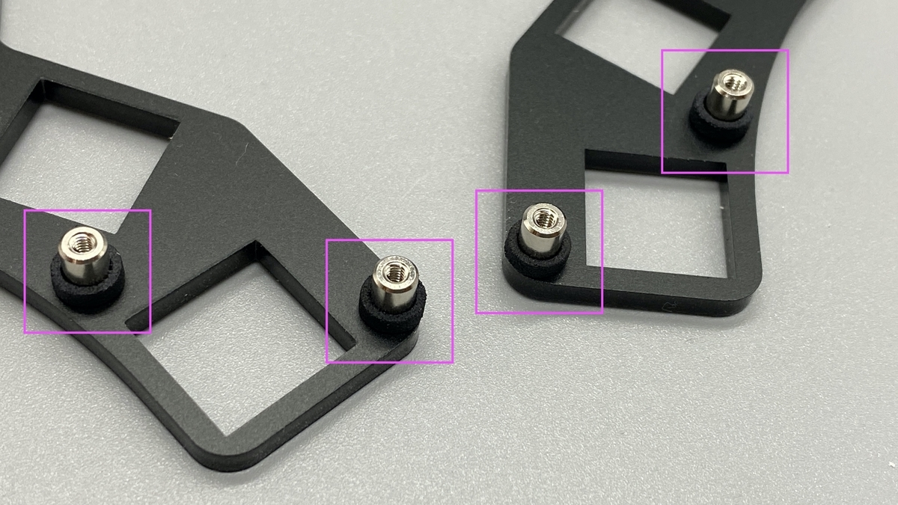

プレートの準備
プレートの確認
- 各プレートは左右共通です。
- どちらを使っても大丈夫です。
保護紙を剥がす
- セロテープなどを貼り付けて、端から勢いよくやると剥がれると思います
- 剥がれにくい時もあるので根気よく！
剥がした状態
トッププレートの取り付け
トッププレートにネジ、スペーサーをつける

スペーサーに脱落防止用の黒い輪っかをつける

トッププレートにPCBを重ねる
キースイッチの取り付け
-
裏返してキースイッチをはめていく
-
親指の4キー分は上下が逆になるので注意してください
-
全てつけた状態
ProMicroプレート用のスペーサーの取り付け
- 下からネジを通して指で押さえ、上からスペーサーを取り付けます
※ボトムプレートをつけてしまうと、はずさないと付けられないので注意！
※ボトムプレートの前に作業をしてください！
（自分もいまだによくやるのでご注意を） - 上にスペーサー
- 下からネジを取り付ける
ボトムプレートの取り付け
- ボトムプレートを重ねて、ネジで取り付けてください。
クッションゴムの取り付け
- 参考
ProMicro保護プレートの取り付け
- 保護紙を剥がす
- ProMicro保護プレートを重ねて、ネジで取り付けてください。